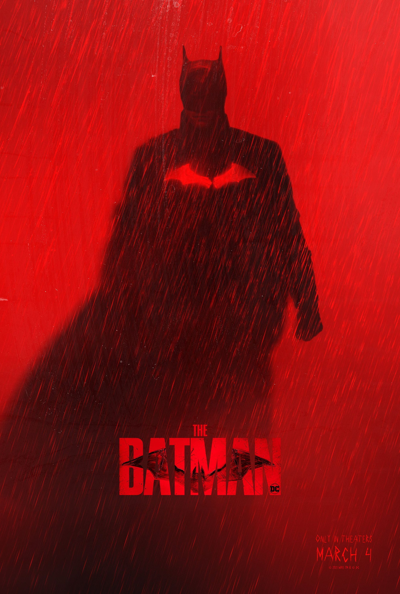

The Batman
Cuando un asesino apunta a la élite de Ciudad Gótica con una serie de ardides sádicos, el mayor detective del mundo sigue una serie de pistas crípticas que lo llevan a investigar en el bajo mundo, la evidencia empieza a cerrar, y queda clara la magnitud de los planes del criminal. Batman debe forjar nuevas relaciones, revelar al culpable y ajusticiar el abuso de poder y la corrupción que asedian a Ciudad Gótica desde hace mucho.
Jujutsu Kaisen 0
Erika, amiga de la infancia de Yuuta Okkotsu, murió en un accidente automovilístico. Su espíritu permanece con él, más ya no es la dulce niña que él conocía. Se manifiesta como una entidad monstruosa y poderosa que lo protege ferozmente.